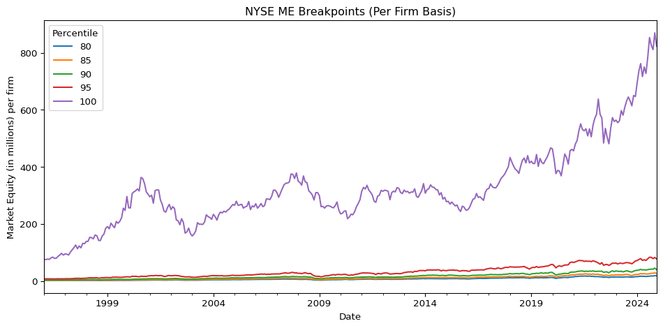
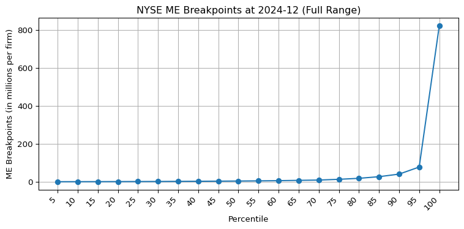
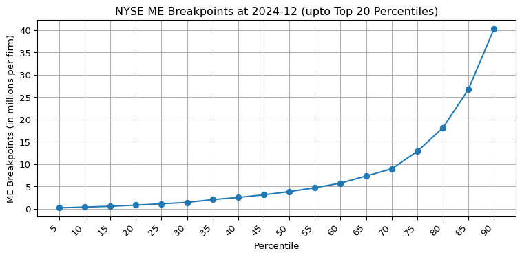
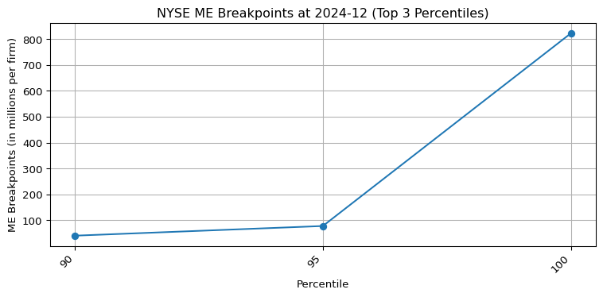
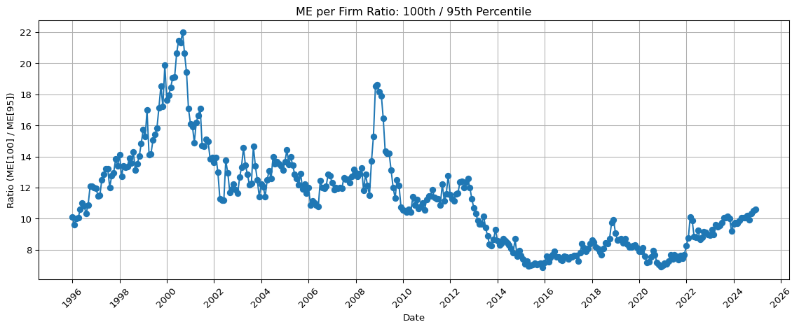
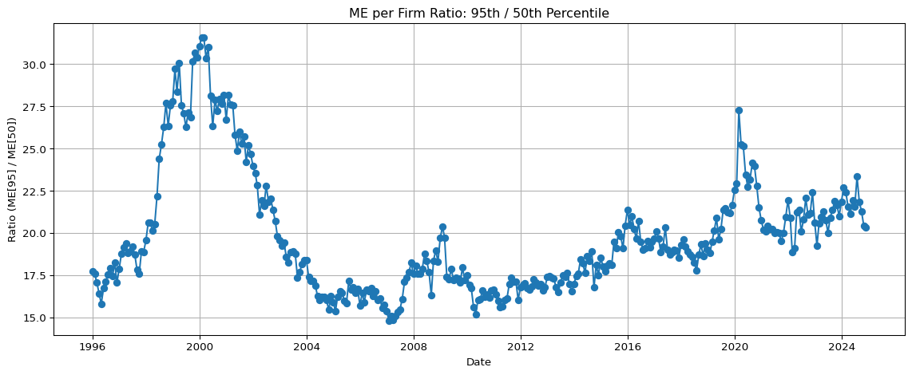

The NYSE continues to exhibit substantial market capitalization concentration. Since 2010 — and more sharply since 2016 — the very largest firms have distanced themselves even from the rest of the top 5%, highlighting the structural importance of tail dynamics in financial markets. Any realistic asset pricing model must account for this persistent and extreme upper-tail asymmetry.
Code
import pandas as pdimport pandas_datareader.data as pdrimport warningswarnings.simplefilter(action='ignore', category=FutureWarning) # FutureWarning 제거import matplotlib.pyplot as pltimport matplotlib.dates as mdates# Define time periodstart_date ="1996-01-01"end_date ="2024-12-31"# Fetch Fama-French ME_Breakpoints data (NYSE percentile breakpoints)breakpoints_raw = pdr.DataReader( name="ME_Breakpoints", data_source="famafrench", start=start_date, end=end_date)[0]# Extract percentile labels from column names (e.g., "(0, 5)" -> "5")def extract_upper_bound(label):ifisinstance(label, str) and"("in label:try:returnstr(int(label.split(",")[1].replace(")", "").strip()))exceptException:return labelelifisinstance(label, tuple):returnstr(label[1])returnstr(label)# Rename columns to only use upper percentile valuescolumns_to_rename = {col: extract_upper_bound(col) for col in breakpoints_raw.columns if col !='Count'}breakpoints = breakpoints_raw.rename(columns=columns_to_rename)# Normalize ME values by number of firms (Count) to get "per firm" valuesfor col in breakpoints.columns:if col !='Count': breakpoints[col] = breakpoints[col] / breakpoints['Count']# Print average firm count over the periodavg_count =int(breakpoints['Count'].mean())print(f"Average number of NYSE firms from {start_date} to {end_date}: {avg_count}")
Average number of NYSE firms from 1996-01-01 to 2024-12-31: 1386
The Fama-French dataset ME_Breakpoints provides monthly percentile breakpoints for market equity (ME), computed only from NYSE stocks. These breakpoints span from the 5th to the 100th percentile and are calculated based on market capitalization (price times shares outstanding, in millions of USD) at month-end. Importantly, closed-end funds and REITs are excluded, and only firms with CRSP share codes 10 or 11 and valid price/share data are included.
This file investigates the evolution of market concentration in the NYSE based on these ME breakpoints, emphasizing the dynamics in the upper tail of the distribution, particularly the top 5% of firms.
Breakpoint Time Series per Firm (1996–2024)
We plot the NYSE ME breakpoints divided by the number of firms each month (“per firm”) from 1996 to 2024. The results reveal two distinct phases:
Pre-2010: A cyclical pattern dominates, consistent with broader economic expansions and contractions. For instance, the 2000–2001 tech bubble and the 2008 global financial crisis exhibit clear signals of expansion and collapse.
Post-2010: A structural break is visible. Especially since 2016, the average ME per firm in the top percentile (100%) exhibits a sharp and persistent upward trend.
This long-term trend implies a sustained capital lock-in within a small number of mega-cap firms, increasingly distanced from the rest of the NYSE universe.
Code
# Plot selected percentile breakpoints over timeselected_percentiles = ['80', '85', '90', '95', '100']breakpoints[selected_percentiles].plot(figsize=(10, 5))plt.legend(title='Percentile')plt.ylabel('Market Equity (in millions) per firm')plt.title('NYSE ME Breakpoints (Per Firm Basis)')plt.tight_layout()plt.show()

Cross-Sectional Concentration at the Tail
To better understand the shape of the right tail, we visualize the percentile distribution at the most recent observation (2024-12). The result is striking: while the ME per firm grows gradually between percentiles 5 to 95, a dramatic jump occurs at the 100th percentile.
This highlights that the concentration of market value within the top 5% is extreme, and the very last percentile alone contains firms with ME per firm often an order of magnitude greater than those in the 95th percentile.
Code
def plot_breakpoints_at_end(df, count_col='Count', start_pct=0, end_pct=None, title_suffix=''):""" Plot breakpoints at the last available date. Parameters: df: DataFrame with percentile columns and 'Count' count_col: name of the column representing number of firms (default: 'Count') start_pct: starting index for column slice (e.g., -20 for top 20 percentiles) end_pct: ending index for column slice (default: None means till the end) title_suffix: string appended to plot title """# Select data at last date last_row = df.tail(1).drop(columns=[count_col])# Slice desired percentile columns selected_columns = last_row.columns[start_pct:end_pct] y_data = pd.to_numeric(last_row[selected_columns].values.flatten(), errors='coerce')# Plot plt.figure(figsize=(8, 4)) plt.plot(selected_columns, y_data, marker='o') plt.xticks(rotation=45, ha='right') plt.xlabel('Percentile') plt.ylabel('ME Breakpoints (in millions per firm)') plt.title(f'NYSE ME Breakpoints at {df.index[-1]}{title_suffix}') plt.tight_layout() plt.grid(True) plt.show()# 전체 percentile 구간 시각화plot_breakpoints_at_end(breakpoints, start_pct=0, title_suffix='(Full Range)')# 상위 3개 빼고 시각화 (5~90)plot_breakpoints_at_end(breakpoints, start_pct=-20, end_pct=-2, title_suffix='(upto Top 20 Percentiles)')# 가장 극단적인 상위 3개만 (90, 95, 100 만)plot_breakpoints_at_end(breakpoints, start_pct=-3, title_suffix='(Top 3 Percentiles)')



Time Series of the Tail Ratio: 100th / 95th Percentile
To quantify tail concentration dynamics over time, we construct a monthly time series of the ME per firm ratio between the 100th and 95th percentiles. This ratio serves as a tail index for how dominant the very largest firms are, even among the elite.
The time series reveals the following:
1996–2001: Rapid escalation during the dot-com boom, with the ratio peaking above 20.
2003–2008: Stabilization around ~13.
2009: A brief post-crisis surge back above 18.
2010–2016: A sharp decline and plateau near 7, indicating relative equality among top-tier firms.
Post-2016: A gradual resurgence in the ratio, reflecting renewed concentration at the very top.
Code
# Calculate the ME per firm ratio: 100th / 95th percentileratio_series = breakpoints['100'] / breakpoints['95']# Convert PeriodIndex to DatetimeIndex for plottingratio_series.index = ratio_series.index.to_timestamp()# Plot both raw and log-transformed ratioplt.figure(figsize=(12, 5))ax = plt.gca()ax.xaxis.set_major_locator(mdates.YearLocator(2))ax.xaxis.set_major_formatter(mdates.DateFormatter('%Y'))ax.tick_params(axis='x', rotation=45) # x축 눈금 회전 추가# Raw ratioplt.plot(ratio_series.index, ratio_series, marker='o')plt.title('ME per Firm Ratio: 100th / 95th Percentile')plt.xlabel('Date')plt.ylabel('Ratio (ME[100] / ME[95])')plt.grid(True)plt.tight_layout()plt.show()

Code
# Calculate the ME per firm ratio: 95th / 50th percentileratio_series = breakpoints['95'] / breakpoints['50']# Convert PeriodIndex to DatetimeIndex for plottingratio_series.index = ratio_series.index.to_timestamp()# Plot both raw and log-transformed ratioplt.figure(figsize=(12, 5))# Raw ratioplt.plot(ratio_series.index, ratio_series, marker='o')plt.title('ME per Firm Ratio: 95th / 50th Percentile')plt.xlabel('Date')plt.ylabel('Ratio (ME[95] / ME[50])')plt.grid(True)plt.tight_layout()plt.show()

Broader Context: NYSE and the Top 5%
It is critical to underscore that Fama-French breakpoints are calculated using only NYSE stocks. Despite the rise of Nasdaq dominance in recent decades, the NYSE remains the foundation for constructing breakpoints in academic asset pricing.
The breakpoints for:
Market Equity (ME): monthly, based on NYSE stocks with viable price and share data.
Book-to-Market (BE/ME): annually, using BE from t-1 and ME from December of t-1.
These indicators, especially in the upper tail, are overwhelmingly driven by the top 5% of NYSE firms — roughly 60–70 firms. These companies exert outsized influence on asset pricing, portfolio construction, and market dynamics.